전산응용토목제도기능사 (2009-01-18 기출문제)
1과목: 토목제도(CAD)
1. 1방향 슬래브의 두께는 최소 몇 ㎜ 이상인가?
- 80㎜
- 100㎜
- 120㎜
- 150㎜
(정답률: 74%)

2. 4변에 의해 지지돼는 2방향 슬래브 중에서 단변에 대한 장변의 비가 최소 몇 배를 넘으면 1방향 슬래브로 해석하는가?
- 1배
- 2배
- 3배
- 4배
(정답률: 68%)
3. 보에서 다발철근으로 사용할 수 있는 최대 공칭지름의 철근은?
- D19
- D25
- D32
- D35
(정답률: 61%)
4. 1방향 철근콘크리트 슬래브의 수축 온도 철근의 간격으로 옳은 것은?
- 슬래브 두께의 5배 이하, 또한 450㎜ 이하
- 슬래브 두께의 6배 이하, 또한 500㎜ 이하
- 슬래브 두께의 5배 이상, 또한 450㎜ 이상
- 슬래브 두께의 6배 이상, 또한 500㎜ 이상
(정답률: 53%)
5. 300×400㎜의 띠철근압축부재에 축방향 철근으로 D25(공칭지름 25㎜)를 사용하고 굵은골재의 최대치수가 25㎜ 일 때 이 기둥에 대한 축방향 철근의 순간격은 최소 얼마 이상이어야 하는가?
- 25㎜ 이상
- 38㎜ 이상
- 40㎜ 이상
- 45㎜ 이상
(정답률: 37%)
6. 다음 중 철근의 정착에 더한 설명으로 옳은 것은?
- 철근의 정착은 묻힘 길이에 의한 방법만을 의미한다.
- 묻힘 길이에 의한 정착에서 철근의 정착길이는 철근의 간격이 크면 정착길이는 길어져야한다.
- 철근이 콘크리트 속에서 미끄러지거나 뽑혀 나오지 않도록 하기 위하여 연장하여 묻어놓은 철근의 길이를 정착길이라 한다.
- 묻힘 길이에 의한 정착에서 철근의 정착길이는 철근의 피복두께가 크면 길어져야 한다.
(정답률: 68%)
7. 철근콘크리트 부재일 경우, 부재측에 직각으로 배치된 전단 철근의 간격은?
- 1/4 이하, 400㎜ 이하
- 1/2 이하, 400㎜ 이하
- 1/4 이하, 600㎜ 이하
- 1/2 이하, 600㎜ 이하
(정답률: 17%)
8. 강도 설계법에서 균형보의 중립축의 위치를 구하는 공식은? (단, D=유효깊이, fy=철근의 항복강도)
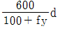
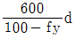
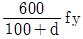
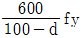
(정답률: 43%)
9. 콘크리트를 친후 시멘트와 골재알이 가라앉으면서 물이 떠오는 현상을 무엇이라 하는가?
- 풍화
- 레이턴스
- 블리딩
- 경화
(정답률: 89%)
10. 180° 표준갈로리와 90° 표준갈고리의 구부리는 최소 내면 반지름은 0.3% 이상일 때 철근지름의 몇 배 이상이어야 하는가?
- 5배
- 4배
- 3배
- 2배
(정답률: 17%)
11. 콘크리트의 배합설계에서 재료 계량의 허용 오차로 옳은 것은?
- 물 : 1%, 혼화재 : 3%
- 물 : 1%, 골재 : 3%
- 시멘트 : 2%, 혼화재 : 3%
- 시멘트 : 2%, 골재 : 3%
(정답률: 41%)
12. 단철근 직사각형보에서 등가 직사각형 응력의 깊이(ɑ)는 중립축으로부터 압축측 콘크리트 상단까지의 거리(C)에 콘트리트의 압축 강도에 따라 변하는 계수(β1)를 곱한 값으로 구한다. 즉, ɑ=β1·c의 관계식이 성립될 때 콘크리트 강도가 25MPa이라면 계수(β1)는?
- 0.75
- 0.80
- 0.85
- 0.90
(정답률: 57%)
13. AE 콘크리트의 특지에 대한 설명으로 틀린 것은?
- 내구성 및 수밀성이 증대된다.
- 워커빌리티가 개선된다.
- 응결 융해에 대한 저항성이 개선된다.
- 철근과의 부착 강도가 증대된다.
(정답률: 49%)
14. 다음 중 철근의 겹침이음에 대한 설명으로 옳은 것은?
- 이형철근을 겹침이음할때 대는 갈고리를 적용한다.
- D35를 초과하는 철근은 겹침이음으로 연결한다.
- 인장 이형철근의 겹침이음 길이는 A급이 B급보다 짧다.
- 압축 이형철근의 겹침이음 길이는 A, B, C급으로 분류한다.
(정답률: 41%)
15. 시멘트의 응결 시간을 늦추기 위하여 사용되는 혼화제는?
- 급결제
- 지연제
- 발포제
- 감수제
(정답률: 81%)
16. 3등교 교량의 설계에 적용되는 도로교설계기준의 표준트럭 하중으로 옳은 것은?
- DB-24
- DB-18
- DB-15.5
- DB-13.5
(정답률: 30%)
17. 2방향 작용에 의하여 펀칭 전단(punching shear)이 독립확대기초에서 발생될 때 위험 단면의 위치는?(단, D는 기초판의 유효깊이 이다.)
- 기둥 전면에서 D/2 만큼 떨어진 곳
- 기둥 전면에서 D/3 만큼 떨어진 곳
- 기둥 전면에서 D/4 만큼 떨어진 곳
- 기둥 전면
(정답률: 44%)
18. 1방향 슬래브에서 배력 철근의 배치 효과 및 이유에 대한 설명으로 옳지 않은 것은?
- 응력의 고른 분포
- 주철근의 간격 유지
- 콘크리트의 건조수축이나 온도 변화에 의한 수축 감소
- 슬래브의 두께 감소
(정답률: 51%)
19. 도로교 설계 기준의 DB-24(표준트럭하중)의 총 중량은?
- 135KN
- 243KN
- 324KN
- 432KN
(정답률: 30%)
20. 토목 구조물에 관한 설명 중 옳지 않은 것은?
- 일반적으로 규모가 크다.
- 공공의 목적으로 건설된다.
- 구조물의 수명이 짧다.
- 자연 환경 속에 놓인다.
(정답률: 84%)
2과목: 철근콘크리트
21. 철근 콘크리트 기둥을 분류할 때 구조용 강재나 강관을 축방향으로 보강한 기둥은?
- 띠철근 기둥
- 합성 기둥
- 나선 철근 기둥
- 복합 기둥
(정답률: 42%)
22. 2000년 11월 개통되었으며 총 길이가 7.31Km이고 우리나라 최대 규모의 사장교가 포함되어 있는 교량은?
- 영종 대교
- 남해 대교
- 서해 대교
- 광안 대교
(정답률: 72%)
23. 나선철근 기둥의 나선철근 순간격의 범위로 옳은 것은?
- 20 ~ 50㎜
- 25 ~ 78㎜
- 30 ~ 90㎜
- 35 ~ 120㎜
(정답률: 47%)
24. 토목 구조물 중 콘크리트 속에 철근을 배치하여 양자가 일체가 되어 외력을 받게 한 구조는?
- 철근 콘크리트 구조
- 프리스트레스트 콘크리트 구조
- 합성 구조
- 강 구조
(정답률: 57%)
25. 보기는 토목구조물을 설계할 때의 절차를 항목별로 표기한 것이다. 순서대로 옳게 나열된 것은?
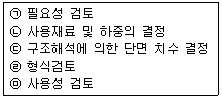
- ㉤ → ㉡ → ㉢ → ㉣ → ㉠
- ㉤ → ㉢ → ㉡ → ㉣ → ㉠
- ㉠ → ㉡ → ㉢ → ㉣ → ㉤
- ㉠ → ㉣ → ㉡ → ㉢ → ㉤
(정답률: 39%)
26. PS 강재에 어떤 인장력으로 긴장한 후 그 길이를 일정하게 유지해 주면 시간이 지남에 따라 PS 강재의 인장응력이 감소한다. 이러한 현상을 무엇이라고 하는가?
- 크리프
- 포스트 텐션
- 릴랙세이션
- 프리스트레스
(정답률: 60%)
27. 19 ~ 20세기 초 재료 및 신기술의 발전으로 장대교량의 건설이 가능해졌다. 다음 중 이 시기에 개발된 재료 및 신기술이 아닌 것은?
- 트러스
- 포틀랜드 시멘트
- 철근 콘크리트
- 프리스트레스트 콘크리트
(정답률: 40%)
28. 공칭지름 12.7㎜인 이형철근을 바르게 표시한 것은?
- Ø 12
- D 12
- Ø 13
- D 13
(정답률: 52%)
29. 휨부재를 강도설계법에 따라 설계를 할 때 기본가정으로 틀린 것은?
- 변형률은 중립축으로부터의 거리에 반비례한다.
- 보가 압축파괴를 할 때 압축측 콘크리트의 최대 변형률은 0.003으로 가정한다.
- 보가 극한상태에서 휨모멘트 계산 시 콘크리트의 인장강도는 무시한다.
- 철근과 콘크리트의 부착은 완전하며 그 경계면에서 활동은 일어나지 않는다.
(정답률: 38%)
30. 철근 콘크리트와 비교한 프리스트레스트 콘크리트의 특징이 아닌 것은?
- 콘크리트와 강재의 강도가 작아도 된다.
- 설계 하중 작용 시 인장측에 균열이 발생하지 않는다.
- 단면을 작게 할 수 있다.
- 내화성에 대하여 불리하다.
(정답률: 43%)
31. 그림과 같은 물체의 정면도와 우측면도를 3각법으로 바르게 표시한 것은?
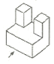
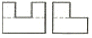
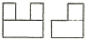
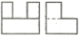
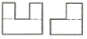
(정답률: 71%)
32. 건설재료 단면의 경계 표시 기호 중에서 지반면(흙)을 나타낸 것은?
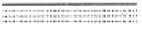
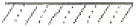
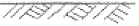
(정답률: 85%)
33. 제도 용지의 폭과 길이의 비는 얼마인가?
- 1 : √5
- 1 : √3
- 1 : √2
- 1 : 1
(정답률: 90%)
34. 윤곽선은 최소 몇 ㎜ 이상 두께의 실선으로 그리는 것이 좋은가?
- 0.1㎜
- 0.3㎜
- 0.4㎜
- 0.5㎜
(정답률: 76%)
35. 글자를 제도하는 방법을 설명한 것으로 틀린 것은?
- 한자의 서체는 KS A 0202에 준하는 것이 좋다.
- 영자는 주로 로마자의 소문자를 사용한다.
- 숫자는 아리비아 숫자를 원칙으로 한다.
- 한글자의 서체는 활자체에 준하는 것이 좋다.
(정답률: 72%)
36. 가는 실선의 용도로 틀린 것은?
- 숨은선
- 치수선
- 지시선
- 회전 단면선
(정답률: 60%)
37. A3 도면으로 나타내기 위한 도면영역의 한계점(단위 ㎜)은?
- 1189, 841
- 841, 594
- 420, 297
- 297, 210
(정답률: 81%)
38. 콘크리트의 타설이음부를 표시할 때 가장 적합한 표현방법은?
- 가는 실선으로 표시하고, 타설 이음부라고 기입한다.
- 파선으로 표시하고, 타설이라고 기입한다.
- 일점쇄선으로 표시하고, 타설 이음부라고 기입한다.
- 이점쇄선으로 표시하고, 타설이라고 기입한다.
(정답률: 33%)
39. 문자의 긁기는 한글자, 숫자 및 영자의 경우에는 높이에 의한 문자 크기의 호칭에 대하여 얼마로 하는 것이 적당한가?
- 1/3
- 1/6
- 1/9
- 1/12
(정답률: 70%)
40. 다음 중 선이 교차할 때 표시법으로 옳지 않은 것은?
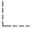
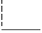
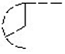
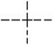
(정답률: 75%)
3과목: 토목일반구조
41. 가는 1점 쇄선의 주요 용도가 아닌 것은?
- 대칭을 나타내는 선
- 회전 단면을 한 부분의 윤곽을 나타내는 선
- 그림의 중심을 나타내는 선
- 움직이는 부분의 궤적 중심을 나타내는 선
(정답률: 54%)
42. CAD 시스템의 입력 장치가 아닌 것은?
- 마우스
- 키보드
- 플로터
- 펜 마우스
(정답률: 86%)
43. 기억장치 중 기억된 자료를 읽고 쓰는 것이 모두 가능하며 전원이 끊어지면 기억된 내용이 모두 사라지는 기억 장치는?
- ROM
- RAM
- 하드디스크
- 자기 디스크
(정답률: 69%)
44. 선, 원주 등을 같은 길이로 분할할 때 사용하는 기구는?
- 컴퍼스
- 디바이더
- 형판
- 운형자
(정답률: 71%)
45. A1 용지에서 윤곽의 나비는 철하지 않을 때 최소 몇 ㎜ 이상 여유를 두는 것이 바람직한가?
- 5
- 10
- 15
- 20
(정답률: 61%)
46. 정면, 평면, 측면을 하나의 투상도에서 동시에 볼 수 있으며 직각으로 만나는 3개의 모서리가 각각 120°를 이루게 그리는 도법은?
- 등각 투상도
- 유각 투상도
- 경사 투상도
- 평형 투상도
(정답률: 81%)
47. CAD 시스템을 이용하여 설계할 때 장점으로 볼 수 없는 것은?
- 설계 과정에서 능률이 저하되지만 출력이 용이하다.
- 도면 작성 시간을 단축시킬 수 있다.
- 컴퓨터를 통한 계산으로 수치 결과에 대한 정확성이 증가한다.
- 설계제도의 표준화와 규격화로 경쟁력을 향상시킬 수 있다.
(정답률: 72%)
48. “24@200=4800”에 대한 설명으로 옳은 것은?
- 전장 4800㎜를 200㎜로 24등분 한다.
- 전장 4800㎜를 24㎜로 200등분 한다.
- 200㎝ 간격으로 24등분 하여 4800㎝로 만든다.
- 24㎝ 간격으로 200등분 하여 4800㎝로 만든다.
(정답률: 64%)
49. 다음은 재료의 단면표시이다. 무엇을 표시하는가?
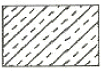
- 석재
- 목재
- 강재
- 콘크리트
(정답률: 75%)
50. 토목제도에서 치수선에 대한 치수의 위치로 바르지 않은 것은?
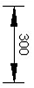
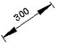
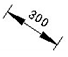
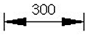
(정답률: 68%)
51. 도면의 종류 중 사용목적에 따른 분류에 속하지 않는 것은?
- 부품도
- 계획도
- 제작도
- 설명도
(정답률: 46%)
52. 기둥에 사용되는 철근 기호로 가장 적합한 것은?
- Ⓦ
- Ⓑ
- Ⓕ
- Ⓒ
(정답률: 31%)
53. NO.0의 지반고는 10m, 중심말뚝의 간격은 20m일 때 NO.3＋10에 대한 계획고의 기울기와 성, 절토고는?
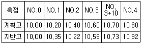
- 상향 1%, 성토(흙쌓기) 0.03m
- 상향 1%, 절토(땅깍기) 0.03m
- 하향 1%, 성토(흙쌓기) 0.03m
- 하향 1%, 절토(땅깍기) 0.03m
(정답률: 31%)
54. 토목제도에 통용되는 일반적인 설명으로 옳은 것은?
- 축척은 도면마다 기입할 필요가 없다.
- 글자는 명확하게 써야 하며, 문장은 세로로 위쪽부터 쓰는 것이 원칙이다.
- 도면은 될 수 있는 대로 실선으로 표시하고, 파선으로 표시함을 피한다.
- 대칭이 되는 도면은 중심선의 양쪽 모두를 단면도로 표시한다.
(정답률: 58%)
55. 실제 거리가 120m인 옹벽을 축척 1 : 1200의 도면에 그리고 기입하는 치수는?
- 10
- 100
- 12000
- 120000
(정답률: 23%)
56. KS에서 원칙으로 하고 있는 정투상도를 그리는 방법은?
- 제 1각법
- 제 2각법
- 제 3각법
- 제 4각법
(정답률: 84%)
57. 치수와 치수선에 대한 설명으로 옳지 않은 것은?
- 치수를 특별히 명시하지 않으면 마무리 치수로 표시한다.
- 치수선은 표시할 치수의 방향에 평행하게 긋는다.
- 제작, 조립, 시공, 설계를 할 때에 기준이 되는 곳이 있을 때에는 그곳을 기준으로 하여 치수를 기입한다.
- 치수의 단위는 ㎝를 원칙으로 하고, 단위 기호는 반드시 기입 하여야 한다.
(정답률: 77%)
58. 토목 구조물의 일반적인 도면 작도 순서에서 다음 중 가장 먼저 그리는 부분은?
- 각부 배근도
- 일반도
- 주철근 조립도
- 단면도
(정답률: 54%)
59. CAD 작업에서 가장 최근에 입력한 점을 기준으로 하여 좌표가 시작되는 좌표계는?
- 절대 좌표계
- 사용자 좌표계
- 표준 좌표계
- 상대 좌표계
(정답률: 52%)
60. 도로 평면도의 기재사항이 아닌 것은?
- 계획고
- 측점번호
- 곡선의 기점
- 곡선의 반지름
(정답률: 48%)